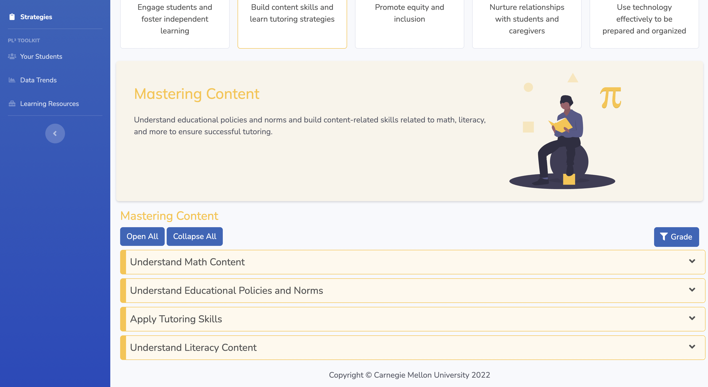
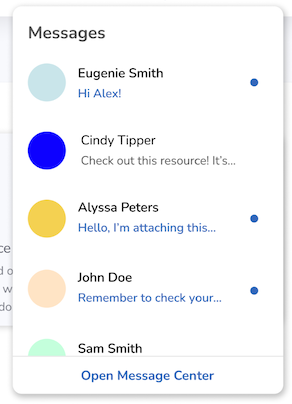

Here are the latest updates for the Personalized Learning Squared ecosystem! We've made changes to the user interfaces for both the original SMART framework and the PL² Lessons pages. With the new user-friendly features in our SMART competencies system, resources can be more intuitively and efficiently accessed. Other minor changes of the features for the messages center and lessons page also bring a smoother user experience.
These changes are now visible in the app and will provide a new experience for tutors to be able to easily access the features they need.
Our display of the Training Strategies has been updated on the landing page for tutor resources. We use vibrant colors for categorizing the 15 different competencies grouped by 5 strategic areas to improve readability of the resources and facilitate tutors' reference efficiency. Similar changes were made to the student Toolkit Learning Resources landing page.
We also made changes to the competency descriptions to improve clarity. We expanded the competencies under the Mastering Content area to include:

We have added a 4th consent option "Save my consent for future lessons" where we will remember the user's consent and not show the consent form on future lessons.
We redesigned the message dropdown in the top navigation bar to add a link to the Message Center as well as indicate which of the user's messages have not been read.

On each competency group landing page, we added a filtering button so that you can now find resources by grade. In this example under the “Social-Emotional” competency group, by clicking on the blue “Grade” button, you can filter resources to show those relevant to grades 3 - 5.